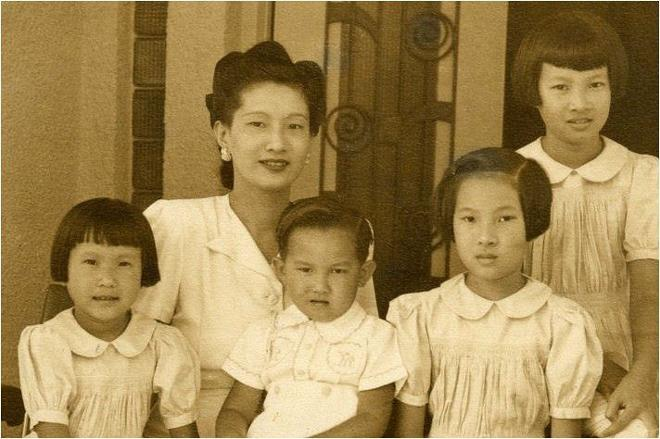

Vậy là bà Nam Phương đã quyết. Bà phải đưa các con vào lánh nạn trong khu nhà thờ khi chiến tranh Pháp -Việt xảy ra, trước hết là để bảo toàn tính mạng cho các con, bà cho Bảo Long đi trước.
Mới sáng sớm ngày 19 tháng 12 năm 1946, người kéo xe đã chờ sẵn ngoài cổng. Bảo Long và một người hầu trẻ tuổi, người đã theo anh từ lúc anh chào đời và anh coi như người bạn thân thiết, cùng bước lên xe. Bà Nam Phương không đi theo cùng vì sợ gây ầm ĩ, chỉ ngồi trong nhà nhìn đứa con trai đầu lòng vô cùng thương yêu và người hầu cho đến khi khuất bóng. Bà lặng lẽ nhìn theo chiếc xe lăn bánh.
Chỉ mấy phút sau, Bảo Long đã đến nhà thờ dòng Chúa Cứu thế vì nó gần nhà anh. Cha cố đã đợi anh ở đó.
Tu viện mang dáng vẻ cổ kính của các nhà thờ tôn giáo dưới thời quân chủ ngày trước. Đó là một tòa nhà rộng hình chữ nhật, gồm hai dãy phòng dành cho các tu sĩ, có hành lang bao quanh. Nơi đây các cha xứ vẫn thường hành lễ và xưng tội. Một tòa nhà thật đẹp, được trang trí một cách cầu kỳ thông qua những đường chỉ bằng thạch cao, mang dáng vẻ của một tòa lâu đài.
Lúc gia đình bà Nam Phương tạm lánh ở đó, có nhiều người cũng xin vào ở tạm như bà. Vì thế có nhiều bạn cùng lứa tuổi Bảo Long. Anh cảm thấy thoải mái, nhanh chóng thích nghi với môi trường vì mẹ anh là người sùng đạo. Sau những diễn biến đã xảy ra, anh đã có được hơn một năm học ở trường công trong thành phố, đã quen với nề nếp sinh hoạt nhi đồng theo cách giáo dục của Việt Minh, được hưởng thụ nhiều tự do khác hẳn lề thói giáo dục để làm vua trong hoàng cung trước đây hoặc tác phong sinh hoạt tôn giáo trong tu viện.
Ở tu viện, bữa ăn đầu tiên, cả nhà anh ăn uống bình thường, không làm dấu, không đọc kinh cầu nguyện. Bảo Long được bố trí một phòng riêng nhưng anh vẫn luôn gần gũi chăm sóc các em cùng mẹ.

.Giờ đây chỉ còn duy nhất một cô hầu phòng đi theo nên bà Nam Phương cũng tự tay làm nhiều việc. Bà không chỉ trực tiếp dạy dỗ các con như trước đây mà còn giặt giũ, lau dọn nhà cửa. Còn người hầu của Bảo Long nay nhận công việc gác cổng trường dòng.
Mặc dầu hoàn cảnh chật chội chen chúc, gia đình bà Nam Phương cũng được Cha Bề trên thu xếp cho ở trong bốn căn phòng riêng sát liền nhau, có cửa ra vào thông nhau để cả nhà đi lại, ra vào gặp gỡ nhau mà không phải đi qua hành lang, tránh không chung đụng với những gia đình lánh nạn khác.
Điều kiện sống vất vả, khó khăn. Nước khan hiếm. Mỗi buổi sáng mỗi người chỉ có một ca nước để làm vệ sinh cá nhân. Tuy nhiên, các con bà đã quen dần và không hề kêu ca, than phiền. Chúng chỉ sợ tiếng súng nổ mặc dầu chuyện này xảy ra như cơm bữa.
Cũng chính cái ngày mà Bảo Long một mình đi vào tu viện với người hầu, ngay đêm hôm đó, bà Nam Phương được cha cố cho biết là Chủ tịch Hồ Chí Minh đã ra Lời kêu gọi toàn dân kháng chiến. Vì lòng tôn kính Cụ Hồ từ lâu, bà lặng người trước lời hiệu triệu thiêng liêng của Cụ:... Bất kỳ đàn ông, đàn bà, bất kỳ người già người trẻ, không phân biệt tôn giáo, đảng phái, dân tộc. Hễ là người Việt Nam thì phải đứng lên, đánh thực dân Pháp để cứu tổ quốc. Ai có súng dùng súng. Ai có gươm dùng gươm, không có gươm thì dùng cuốc, thuổng, gậy gộc. Ai cũng phải ra sức chống thực dân Pháp để cứu nước. Giờ cứu nước đã đến. Ta phải hy sinh đến giọt máu cuối cùng để giữ gìn đất nước...
Bà biết rằng chiến tranh đã lan rộng và những cuộc đụng độ ngày càng dữ dội và quyết liệt. Mặc bom đạn, anh em Bảo Long vẫn tiếp tục cuộc sống trong tu viện. Bảo Long cùng các em còn nuôi những con vật bị lạc trong Tu viện đang lang thang tìm chỗ trú ẩn. Chúng đã quen dần với cuộc sống gò bó trong tu viện với những tiếng bom rền, đạn nổ. Dường như không còn gì khiến chúng phải chú ý hay bị choáng nữa. Chúng thản nhiên như đã quen với nguy hiểm và cả cái chết. Kỷ luật ở đây chặt chẽ, nghiêm túc, cuộc sống kém vui vẻ, hấp dẫn như thời gian cậu sống và học tập ở trường công của Việt Nam. Buổi sáng phải dậy thật sớm và các bữa ăn cũng đạm bạc.
Bà Nam Phương vẫn thường xuyên đọc sách và năng cầu kinh. Bà được bố trí một căn phòng xung quanh có hành lang nên không có cửa sổ trông ra phố. Mặc dù không có nhiều ánh sáng trời nhưng bà chấp nhận bởi có lẽ cha cố lo cho sự an toàn của bà và các con bà là chủ yếu.
Tất cả mọi người trong trường dòng đều dành cho gia đình bà và các con đặc biệt là Bảo Long sự quý trọng. Tất cả họ đều biết rõ tông tích của bà và đều nghĩ bà là một người hạnh phúc sung sướng khi chỉ nhìn vào dáng vẻ bề ngoài của bà. Mặc dù lo lắng không lúc nào nguôi, cuộc sống khó khăn hơn trước bội phần, bà không hề ca thán mà vẫn vui vẻ, lặng lẽ, bà vẫn giữ được những nét đẹp đằm thắm cao sang.
Một hôm, một cha xứ còn trẻ tuổi gặp bà trong tu viện và hỏi:
- Thưa bà, bà là hoàng hậu, chắc bà phải sung sướng lắm!
Bà ôn tồn trả lời:
- Không phải như vậy đâu, giàu có không đem lại hạnh phúc mà là cái tâm của mỗi người.
Cuộc sống riêng tư đau xót như biến bà thành một con người khác hẳn, lạnh lùng, ít nói đến khủng khiếp. Hình như tất cả nước mắt của bà đã chảy cả vào trong...
Tất nhiên sức khỏe của bà đã có phần giảm sút, khuôn mặt xinh đẹp đã có vẻ như già hơn. Các con bà cũng có vẻ gầy đen đi. Chính vì thế, một lần bà Từ Cung vào tu viện thăm mấy mẹ con bà Nam Phương, bà đã ngạc nhiên đến sững sờ khi thấy các cháu bà chẳng khác gì những đứa trẻ bình thường, không còn cái vẻ của những hoàng tử, công chúa nữa. Nhưng đối với bà Nam Phương, điều quan trọng nhất lúc này là sự an toàn cho các con, bởi cha chúng nó đã ở quá xa, không còn lo cho chúng được nữa. Mọi việc bà phải tự quyết định. Chính nỗi lo bảo vệ các con, đặc biệt là Bảo Long đã làm cho bà không còn nghĩ được gì hơn nữa.
Cuộc chiến đấu ở Huế kéo dài hai tháng. Hai tháng kinh hoàng đối với người dân cố đô. Chính vì vậy mà trước đó bà Từ Cung đã rời Huế, di tản về quê nhà.
Rồi chẳng biết từ đâu, bà Nam Phương nghe được tin là Việt Minh đang truy tìm gia đình bà nhất là thái tử Bảo Long để ngăn chặn việc tái lập nền quân chủ khi Pháp trở lại. Chẳng hiểu hư thực ra sao nhưng điều đó đã làm bà lo lắng thật sự. Nhất là một hôm, khi Bảo Long đang chơi ở ngoài sân, bỗng dưng có tiếng súng nổ. Mặc dù chẳng biết hung thủ là ai nhưng linh tính báo cho bà biết điều chẳng lành. Vì vậy, dù được các cha xứ bao bọc, che chở nhưng bỗng dưng bà cảm thấy ở đây không còn an toàn. Phải đưa các con đi chỗ khác nhưng đi đâu? Cung An Định giờ đây vắng lặng, lo sợ chiến sự lan tới, mọi người đã bỏ đi. Chỉ còn lại một vài người hầu nữa mà thôi. Ở đó nhất định là không còn an toàn nữa. Trong lúc bà suy nghĩ mông lung như thế, phía Pháp vẫn tìm cách đưa ra những tin đồn bất lợi cho sự an toàn của Bảo Long nhằm lung lạc tinh thần bà và tiếc thay trong hoàn cảnh rối rắm đó, bà đã tin vào những luận điệu của người Pháp để rồi đi đến quyết định rời khỏi trường dòng, đến ẩn náu bên kia phòng tuyến.
Sau này trong buổi gặp gỡ với nhà báo Pháp Granclément, Bảo Long đã nói rằng là người gần gũi mẹ, ông hiểu mẹ ông là một phụ nữ hiền thục, có phẩm hạnh đáng quý, vào thời điểm thúc bách đó chỉ một mực lo làm sao cho các con được yên ổn chứ không có tham vọng gì về chính trị. Bảo Long nói tiếp: Người Pháp cũng khéo chơi, thông qua các tu sĩ Cứu thế, họ ra sức lung lạc tinh thần mẹ tôi. Cứ xem cách Việt Minh đối xử và che chở cho bà nội tôi, đức hoàng thái hậu Từ Cung lúc này đang đi tản cư, tôi thiết nghĩ rằng họ sẽ đến tìm và sẽ đón mẹ tôi và các em đi tản cư trong vùng kiểm soát. Bởi lẽ có chúng tôi đứng về phía họ, họ sẽ được củng cố khá mạnh và có thể máu sẽ đổ ít hơn. Việc mẹ tôi rời khỏi sự che chở của người Canada chắc chắn đã không giúp được gì cho cha tôi mà chỉ khiến ông càng dứt khoát rời bỏ Cụ Hồ..[1]
Tháng 4 năm 1947, bà Nam Phương vĩnh biệt tấm bình phong trung lập Canada và chấp nhận sự giúp đỡ của Pháp. Bà vô cùng đau khổ vì quyết định này, bởi dưới con mắt của Việt Minh, của tất cả mọi người dân Việt Nam và thế giới, bà đã chạy theo Pháp. Một cơn bão táp nổ ra trong đầu bà. Một sự tự vấn lương tâm dày xé lòng bà. Việc bà và các con ẩn náu bên kia chiến tuyến có phải là một sự phản bội Tổ quốc không? Lòng bà tự nhủ: Không! Bà không hề phản quốc, không hề chống lại nhân dân. Bà vẫn vô cùng yêu đất nước Việt Nam và kính mến Cụ Hồ. Bà chỉ mong có một nơi an toàn cho các con bà. Bà phải cho các con sơ tán khỏi trường dòng vì cách đó mấy hôm, các sĩ quan Pháp đã bắn tin cho bà biết từ nhiều ngày nay, Việt Minh tăng cường trinh sát dường như sắp tấn công tu viện để thu hẹp khu vực cố thủ của Pháp. Vì vậy trường dòng Cứu thế sẽ bị kẹt giữa hai luồng đạn, nguy hiểm đến tính mạng mẹ con bà. Được tin, bà tự nhủ, không còn cách nào khác là phải rời khỏi nơi đây.
Rời trường dòng, mẹ con bà Nam Phương được một chiếc xe bọc thép chở đến gia đình ông chủ nhà băng Đông dương ở Huế tên là Fafard. Gia đình ông Fafard coi việc mẹ con bà Nam Phương đến lánh nạn tại nhà mình là một vinh dự đặc biệt đối với họ, những người vẫn không thể quên được hình ảnh về chế độ quân chủ ở nước An Nam.
Đó là một ngôi nhà hai tầng hình hộp được xây cất kỹ càng. Tầng trệt chật ních người lánh nạn. Các phòng làm việc của nhà băng nay đã trở thành những căn hầm phòng thủ. Tất cả đều là người Pháp hoặc châu Âu, không có ai là người Việt, trừ một thiếu phụ, vợ không chính thức của một người quê đảo Corse.
Bà Nam Phương và các con cùng cô hầu được ông Fafard xếp ở cùng tầng với gia đình ông. Các phòng đã được dọn dẹp gọn gàng, sạch sẽ. Nhưng sau đó vì lý do an toàn cho mẹ con bà, ông bà Fafard đã phải thu xếp chỗ ngủ cho họ dưới tầng hầm. Vậy là một số người đang ở tầng hầm phải chuyển, nhường chỗ cho mẹ con bà. Một vài người Pháp ở đây phải dọn đi đã phản kháng ông Fafard, nói rằng tại sao họ phải nhường chỗ cho bà cựu hoàng người Việt đã theo Việt Minh, mấy hôm trước còn báng bổ nước Pháp…
Ở đây, Bảo Long cũng được ưu tiên một chỗ được bảo vệ chắc chắn nhất, gần tấm vách ngăn kim loại dày nhất, như được bọc kín trong một tấm nệm thép.
Cũng như ở trường dòng Chúa Cứu thế, nước ở đây khan hiếm. Duy nhất chỉ có một vòi nước trong phòng tắm trên tầng một của gia đình Fafard. Để có nước dự trữ, bồn tắm được chứa đầy ắp phòng khi bị cắt nước.
Rồi bà và các con cũng quen dần cuộc sống nơi đây. Dần dần, các con bà cũng chơi với các bạn cùng lứa tuổi. Bà vẫn chăm chỉ cầu nguyện. Thỉnh thoảng, bà tham dự vào những buổi lễ chầu trong phòng khách ở tầng một. Đôi khi bà có nói chuyện với mấy người Âu lân la làm quen bà nhưng bà luôn giữ vẻ đoan trang, kín đáo, uy nghiêm quý phái.
Những ngày ở đây, cảm nhận được lòng chân thành của ông bà Fafard, bà đã nghĩ rằng sau này dù có thế nào đi nữa, bà vẫn coi ông là người thân tín có thể tâm sự được và ông cũng là một con người đàng hoàng, luôn luôn tôn trọng và có nhiều thiện ý với bà. Sau này bà và gia đình vẫn giữ những quan hệ tốt đẹp với gia đình Fafard. Chính về sau, bà Nam Phương đã chọn ông Fafard làm người tin cẩn để quản lý tài sản riêng cho mình.
Sau khi ở Huế, các cuộc pháo kích tạm dừng, bộ đội Việt Minh phải tạm rút ra xa khỏi thành Huế, bỏ lại các cung điện đền miếu trong Đại Nội tan hoang vì bom đạn, mẹ con bà Nam Phương quyết định rời khỏi gia đình ông chủ nhà băng Đông dương để trở về Đà Lạt. Bà nghĩ đã đến lúc phải lo cho việc học hành của các con.
Sau thắng lợi tạm thời của quân Pháp mà lúc đó thì ai có thể biết được là tạm thời hay vĩnh viễn, một nhân viên tình báo Pháp đến gặp bà Nam Phương để thăm dò chính kiến của bà. Không một lời ca ngợi chiến thắng của quân Pháp, bà nói: “Những hy sinh của tôi chẳng là gì so với những khổ cực hiện nay của nhân dân”. Rồi bà nói tiếp không biết liệu bà và các con có sống được trong tình cảnh “khốn cùng” như thế này được nữa không?
Gia đình bà được xe bọc thép Coventry chở từ Huế vào Đà Nẵng. Rồi từ Đà Nẵng, bà và các con đáp máy bay vận tải quân sự Junker 52 bay đi Đà Lạt. Nhưng khi đến Đà Lạt, bà không về trong dinh Bảo Đại, nơi trước đây cả gia đình vợ chồng con cái bà đã sống những năm tháng hạnh phúc trong thời gian ông trị vì. Tòa biệt thự quá lớn so với số người trong gia đình bà lúc này. Không còn tùy tùng, gia nhân. Đang lúc chiến tranh, Đà Lạt cũng không tránh khỏi sẽ trở thành chiến địa. Vì vậy, bà đưa các con về biệt thự của mẹ đẻ và ở tạm đó trong thời gian gần ba tháng. May có các anh chị em họ bên ngoại, con bà bá tước Didelot nên các con bà Nam Phương cảm thấy đỡ buồn. Còn bà, ba tháng nghỉ ngơi để tâm trí có thể trở lại bình thường, để hồi phục những chấn thương tinh thần.
Được trở về sống trong tình yêu thương của mẹ, của chị gái, lòng bà dịu đi bao nỗi đắng cay. Những ngày ở đây, mẹ con bà được chăm sóc chu đáo. Nhưng rồi nghĩ đến tương lai của các con, bà lại đâu có yên. Nghĩ đến Cụ Hồ và Việt Minh, bà thấy xấu hổ. Mẹ con bà đã cắt đứt quan hệ với Việt Minh vì lâu nay bà lánh nạn bên phía người Pháp. Chồng bà vẫn không trở về và vẫn bặt tin tức. Ở Đà Lạt, bà có gia đình bên ngoại, những người ruột thịt yêu thương nhưng kể cả những người thân cũng không giúp được bà lúc này. Nơi đây không còn trường cho bọn trẻ đi học nữa. Không thể để trẻ con bỏ học mãi được! Biết bao câu hỏi lại chồng chất trong lòng bà, bà chưa biết phải trả lời ra sao nữa.
Trong khi bà Nam Phương một thân một mình phải lo lắng che chở, bảo đảm an toàn cho các con trong những hoàn cảnh cam go, ác liệt, phải tự mình quyết định những tình huống cực kỳ khó khăn, tại Hồng Kông, ông Vĩnh Thụy chỉ nghỉ ngơi, thưởng thức lạc thú trên đời. Ở Hồng Kông, để tránh bị nhận diện dễ dàng, ông đã đổi tên. Từ nay không còn là hoàng đế Bảo Đại, không còn là công dân Vĩnh Thụy hay cố vấn tối cao Vĩnh Thụy mà là Wang Kunney tiên sinh, một người Trung Hoa. Danh sách những người đẹp lăng nhăng với ông ngày một thêm dài.
Nhưng cái số ông cũng gặp may. Đúng lúc ông rơi vào cảnh túng thiếu thì Lý Lệ Hà từ Việt Nam sang Hồng Kông với ông để rồi phải mở két, biếu ông tất cả tiền tiết kiệm được của một cô gái nhảy nửa thượng lưu. Đó là số tiền vài trăm bạc mà suốt đời cô tích cóp được nhờ tài quyến rũ của mình.
Rồi tiếp đến là Mộng Điệp. Thời gian Bảo Đại ở Hồng Kông, Mộng Điệp cũng sang để gặp lại người tình bên đó. Cũng giống như vũ nữ họ Lý, Mộng Điệp phải bao bọc Bảo Đại trong những ngày ông rơi vào cảnh nghèo túng.
Là một người vợ yêu thương chồng hết mực, dù giận ông đến tím ruột, bà Nam Phương vẫn không ngừng nghĩ về ông và lo cho ông.
Khi biết những ngày ở Hồng Kông, ông sống trong cảnh túng thiếu và Lý Lệ Hà đã dồn hết của cải của mình lo cho ông như những gì cô ta nhớ lại khi nói về Bảo Đại: “Một buổi tối trời rét cực kỳ, hai đứa mình theo thường lệ, lang thang mãi mỏi nhừ chân. Lão vua dừng gót trước tủ kính sáng choang của một hiệu bán đủ các loại đàn. Lão ngắm nghía với cặp mắt thèm thuồng, rồi ngần ngừ khẽ nói: Ước chi có tiền mua cây đàn gảy chơi cho đỡ buồn. Thật là tội nghiệp! Mình đành phải vét hết túi trong đến túi ngoài, liền mua cây guitare đẹp nhất. Từ bữa đó, lão từ chối không ra phố, nằm miết hoặc ngồi lì bên cửa sổ khách sạn, gảy đàn. Mình thiệt không ngờ lão có tài âm nhạc, không những chơi các bài bản cổ kim danh tiếng của Tây phương, mà còn chơi cả Nam bang, Nam ai… xứ Huế”, bà đã dằn lòng, nỗi lòng của một người phụ nữ đoan trang mực thước, hạ bút viết cho kẻ tình địch đã từng khiến mình ghen tuông bực tức, những dòng sau trong một bức thư: “Em Lý Lệ Hà thân quý. Chị đang ở xa đức cựu hoàng hàng mấy vạn dặm trùng dương, nhưng chị biết rằng em đang hết lòng hết sức chăm sóc cựu hoàng ở Hồng Kông. Đức Từ Cung thái hậu và chị trọn kiếp nhớ ơn em. Chị Nam Phương.”
Rồi đâu phải chỉ có Lý Lệ Hà hay Mộng Điệp, lúc đó ông còn có quan hệ với Jenny Woong, người mà sau này cũng được đưa về Đà Lạt, cũng có một biệt thự như các bà thứ phi người Việt.
Được các giai nhân bao bọc như thế nên ban ngày ông đi tắm, chơi gôn, chơi quần vợt, ban đêm ông lao đến Paramount, vũ trường lớn nhất của thành phố. Ông thường xuyên lui tới các hàng quán. Đến nỗi trong tờ Paris Presse, Merry Bromberger đã viết: “Muốn gặp Bảo Đại ở Hồng Kông chỉ cần dạo mười bốn hộp đêm trong thành phố, dễ hơn là tìm ông trong một khách sạn Anh”.
Ăn chơi nổi tiếng ở Hồng Kông như vậy, liệu có lúc nào ông nghĩ đến số phận vợ con ông ra sao trong tình hình nước sôi lửa bỏng ở Việt Nam nói chung và ở Huế nói riêng?
Rồi về sau ông kiếm được tiền một cách dễ dàng nhờ các phi vụ chuyển tiền từ Việt Nam qua Hồng Kông rồi từ Hồng Kông qua Paris và ngược lại. Bởi lúc đó để khuyến khích những người lao động chân chính sang làm việc ở Đông dương hoặc bù trừ cho những nhà buôn phải liều lĩnh bỏ vốn làm ăn ở cái xứ sở đang có chiến tranh, những đồng bạc được phép chuyển từ Sài Gòn hay Hà Nội đến Paris đổi ra đồng franc được tăng gấp hai lần giá trị ban đầu. Có tiền, ông lại lao vào các cuộc đỏ đen, ăn chơi và gái gú. Ông trở lại cuộc sống xa hoa giàu có. Tòa nhà ông ở được xây theo kiến trúc Anh rất đẹp, cách bờ biển độ hai mươi kilômét, ông có một ban thư ký riêng giúp việc.
Chú thích:
[1] Daniel Grand Clement, Bao Dai ou lé derniers jours de l’Empire d’Annam, Ed. J.C Lattès, 1977.